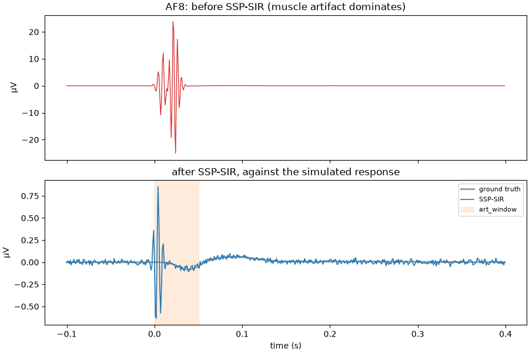
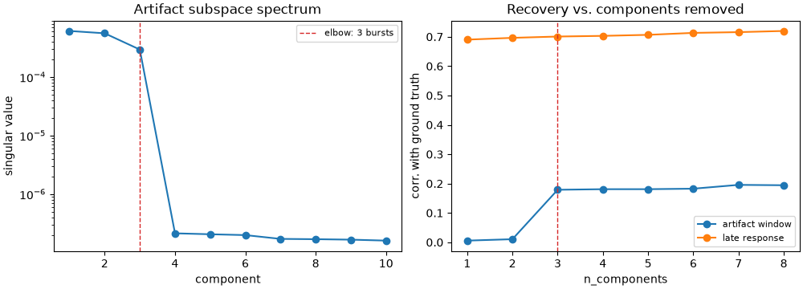
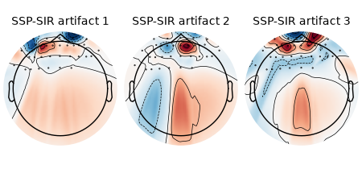

Note
Go to the end to download the full example code.
SSP-SIR: Recovering TMS-Evoked Responses Buried Under Muscle Artifacts#
A TMS pulse fires the scalp muscles directly under the coil. The resulting deflection can be a thousand times larger than the cortical response it overlaps, and it is over within tens of milliseconds.
Signal-space projection can remove it, because the artifact occupies only a few spatial directions – but projecting those directions away also deletes whatever brain signal pointed the same way, and leaves the data in a rotated space whose channels no longer correspond to electrodes. SSP-SIR repairs both problems: it reconstructs the projected data through a forward model, which restores what the head model says must have been there and returns the signal to interpretable sensor space.
This example shows the two design choices that matter most in practice: how many artifact components to remove, and the fact that the projection is applied only where the artifact lives.
Authors: Hamza Abdelhedi (hamza.abdelhedi@umontreal.ca)
import matplotlib.pyplot as plt
import mne
import numpy as np
from mne_denoise._leadfield import make_spherical_leadfield
from mne_denoise.sspsir import SSPSIR
mne.set_log_level("ERROR")
rng = np.random.default_rng(3)
A montage and a forward model#
As with SOUND, the lead field is built from the montage when no forward
is supplied. We build it explicitly here too, so the simulated brain
response is something the head model can actually account for.
montage = mne.channels.make_standard_montage("standard_1020")
ch_names = [ch for ch in montage.ch_names if ch not in ("A1", "A2")][:32]
sfreq = 1000.0
info = mne.create_info(ch_names, sfreq, "eeg")
info.set_montage(montage)
n_channels = len(ch_names)
leadfield = make_spherical_leadfield(info, n_dipoles=5000)
Simulate a TMS-evoked response and a muscle artifact#
The epoch runs from -100 ms to 400 ms around the pulse. The cortical response is three dipoles: an early peak near 40 ms, a mid-latency negative peak, and a slow component that is still going at 250 ms. The muscle artifact is three brief bursts inside the first 40 ms, each with its own focal topography, together ~200x the brain response.
tmin, tmax = -0.1, 0.4
times = np.arange(int((tmax - tmin) * sfreq)) / sfreq + tmin
n_times = times.size
def _gauss(centre, width):
return np.exp(-0.5 * ((times - centre) / width) ** 2)
# Cortical response: forward-consistent, so SIR can reconstruct it. The third
# component is slow and outlasts the artifact by a long way -- that is the part
# a whole-epoch projection would needlessly damage.
brain_sources = rng.choice(leadfield.shape[1], size=3, replace=False)
brain_ts = np.stack(
[
_gauss(0.040, 0.012),
-0.7 * _gauss(0.090, 0.025),
0.6 * _gauss(0.220, 0.070),
]
)
brain = leadfield[:, brain_sources] @ brain_ts
brain /= np.abs(brain).max()
# Muscle artifact: several scalp muscles, each focal, brief and enormous.
# Real TMS muscle artifacts are not rank-1, which is why n_components matters.
artifact = np.zeros((n_channels, n_times))
for chans, weights, centre, freq in (
([2, 3, 4], [1.0, 0.8, 0.55], 0.012, 180.0),
([5, 6, 7], [0.9, 1.0, 0.6], 0.017, 140.0),
([8, 9, 10], [0.7, 0.9, 0.5], 0.021, 220.0),
):
topo = np.zeros(n_channels)
topo[chans] = weights
topo += 0.04 * rng.standard_normal(n_channels)
burst = _gauss(centre, 0.005) * np.sin(2 * np.pi * freq * times)
artifact += 200.0 * np.outer(topo, burst)
noise = 0.02 * rng.standard_normal((n_channels, n_times))
data = brain + artifact + noise
data -= data.mean(axis=0, keepdims=True)
evoked = mne.EvokedArray(data * 1e-6, info, tmin=tmin)
truth = mne.EvokedArray(brain * 1e-6, info, tmin=tmin)
Fit SSP-SIR#
art_window states where the muscle artifact lives. Given one, SSP-SIR
estimates the artifact subspace from that window and crossfades the
suppressed reconstruction in over it, leaving the baseline and the later
components untouched. Without it, the artifact window is detected from
high-frequency power automatically.
# The simulated bursts run out to ~40 ms, so the window has to cover them;
# a window narrower than the artifact leaves residual outside the crossfade.
ART_WINDOW = (0.0, 0.050)
ssp = SSPSIR(n_components=3, art_window=ART_WINDOW, verbose=False)
cleaned = ssp.fit(evoked).transform(evoked)
print(f"Removed {ssp.n_components_} artifact component(s)")
print(f"Singular values: {np.array2string(ssp.singular_values_[:6], precision=2)}")
Removed 3 artifact component(s)
Singular values: [6.12e-04 5.58e-04 2.94e-04 2.13e-07 2.05e-07 1.98e-07]
The result#
The artifact dominates the raw trace so completely that the brain response is invisible at the same scale. After SSP-SIR the recovered waveform tracks the ground truth we simulated.
pick = 12
scale = 1e6
fig, axes = plt.subplots(2, 1, figsize=(9, 6), sharex=True, layout="constrained")
axes[0].plot(times, evoked.data[pick] * scale, lw=0.9, color="tab:red")
axes[0].set_ylabel("µV")
axes[0].set_title(f"{ch_names[pick]}: before SSP-SIR (muscle artifact dominates)")
axes[1].plot(times, truth.data[pick] * scale, lw=2.0, color="0.6", label="ground truth")
axes[1].plot(
times, cleaned.data[pick] * scale, lw=1.2, color="tab:blue", label="SSP-SIR"
)
axes[1].axvspan(*ART_WINDOW, color="tab:orange", alpha=0.15, label="art_window")
axes[1].set_xlabel("time (s)")
axes[1].set_ylabel("µV")
axes[1].set_title("after SSP-SIR, against the simulated response")
axes[1].legend(loc="upper right", fontsize=8)
plt.show()

Why the artifact window matters#
blend='constant' applies the projection uniformly across the epoch
instead of crossfading it in. That removes the artifact just as well, but it
also strips the artifact directions from the baseline and from the late
components, where there was no artifact to remove – so any brain signal
that happened to point the same way is lost for the whole epoch.
def _corr(a, b, mask=slice(None)):
"""Correlation over all channels at once, so strong ones carry the weight.
Averaging per-channel correlations would be dominated by sensors where the
simulated response projects to almost nothing, and those carry only noise.
"""
return float(np.corrcoef(a[:, mask].ravel(), b[:, mask].ravel())[0, 1])
uniform = SSPSIR(n_components=3, blend="constant", verbose=False).fit_transform(evoked)
# The slow component, long after the artifact is over. Restricting the
# comparison to it keeps the question well posed: in the baseline the
# simulated response is exactly zero, so there is no signal to preserve and
# any ratio against it is meaningless.
late = times > 0.12
print("\nCorrelation with the ground truth, late window (>120 ms):")
for label, arr in (("crossfaded", cleaned.data), ("blend='constant'", uniform.data)):
print(f" {label:18s} {_corr(arr, truth.data, late):.4f}")
Correlation with the ground truth, late window (>120 ms):
crossfaded 0.7008
blend='constant' 0.6597
Choosing n_components#
The singular-value spectrum of the artifact window is the principled guide: Mutanen et al. (2016) recommend reading the count off its elbow rather than from a variance threshold. Here three muscle bursts were simulated and the spectrum drops by three orders of magnitude after the third component, so the elbow is unambiguous.
The recovery curve beside it is worth reading carefully, because it does
not show the over-removal penalty that the method is usually warned
about. Removing more than three components keeps helping slightly, in both
the artifact window and long after it. That is a property of this
simulation, not a general result: the muscle topographies here are focal
over a handful of frontal sensors while the cortical sources are deep, so
the two subspaces barely overlap and the extra directions cost almost no
brain signal. On real TMS-EEG the overlap is substantial – which is exactly
why over-removal is the documented failure mode, and why projs_ is worth
inspecting rather than trusting a number picked from a curve like this.
fig, axes = plt.subplots(1, 2, figsize=(10, 3.6), layout="constrained")
axes[0].semilogy(np.arange(1, 11), ssp.singular_values_[:10], "o-")
axes[0].axvline(3, color="tab:red", ls="--", lw=1, label="elbow: 3 bursts")
axes[0].set_xlabel("component")
axes[0].set_ylabel("singular value")
axes[0].set_title("Artifact subspace spectrum")
axes[0].legend(fontsize=8)
early = (times > 0.0) & (times < 0.06) # inside the artifact
late = times > 0.12 # the slow response, long after
counts = list(range(1, 9))
for mask, label in ((early, "artifact window"), (late, "late response")):
scores = [
_corr(
SSPSIR(n_components=k, art_window=ART_WINDOW, verbose=False)
.fit_transform(evoked)
.data,
truth.data,
mask,
)
for k in counts
]
axes[1].plot(counts, scores, "o-", label=label)
axes[1].axvline(3, color="tab:red", ls="--", lw=1)
axes[1].set_xlabel("n_components")
axes[1].set_ylabel("corr. with ground truth")
axes[1].set_title("Recovery vs. components removed")
axes[1].legend(fontsize=8)
plt.show()

Inspecting what was removed#
SSP-SIR exposes the deleted directions as mne.Projection objects, so the
artifact topographies can be checked with MNE’s own tooling. For a method
whose main failure mode is removing too much, looking at what went is worth
the extra line.
mne.viz.plot_projs_topomap(ssp.projs_, info, show=True)

<MNEFigure size 450x220 with 3 Axes>
References#
Mutanen, T. P., Kukkonen, M., Nieminen, J. O., Stenroos, M., Sarvas, J., & Ilmoniemi, R. J. (2016). Recovering TMS-evoked EEG responses masked by muscle artifacts. NeuroImage, 139, 157-166.
Total running time of the script: (0 minutes 17.909 seconds)